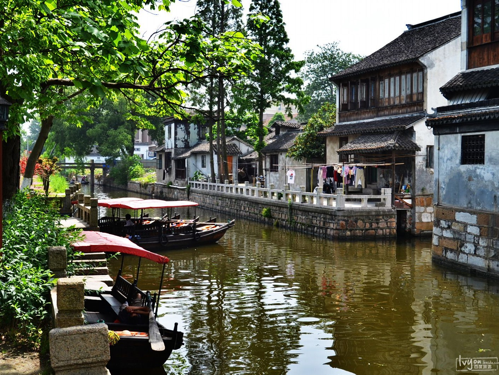

枫泾古镇，地处上海西南。历史上，因地处吴越交汇之处，枫泾镇素有吴越名镇之称。如今是上海通往西南各省的最重要的“西南门户”。枫泾为典型的江南水乡古镇。枫泾古镇周围水网遍布，镇区内河道纵横，桥梁有52座之多，现存最古的为元代致和桥，据今有近700年历史。至今仍完好保存的有和平街、生产街、北大街、友好街四处古建筑物。枫泾古镇是上海地区现存规模较大保存完好的水乡古镇。
枫泾镇成市于宋，建镇于元，是一个已有一千五百多年历史的文明古镇，地跨吴越两界。枫泾镇以桥多、庙宇多、名人多、里弄多为特色，是典型的江南水乡集镇。周围水网遍布，区内河道纵横，素有“三步两座桥，一望十条港”之称，镇区多小圩，形似荷叶；境内林木荫翳，庐舍鳞次，清流急湍，且遍植荷花，清雅秀美，故又称“清风泾”，“枫溪”，别号“芙蓉镇”。